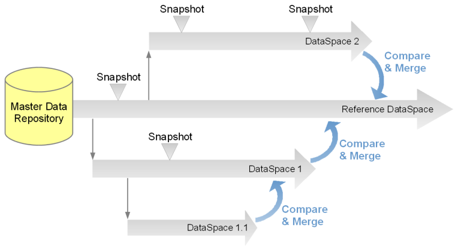
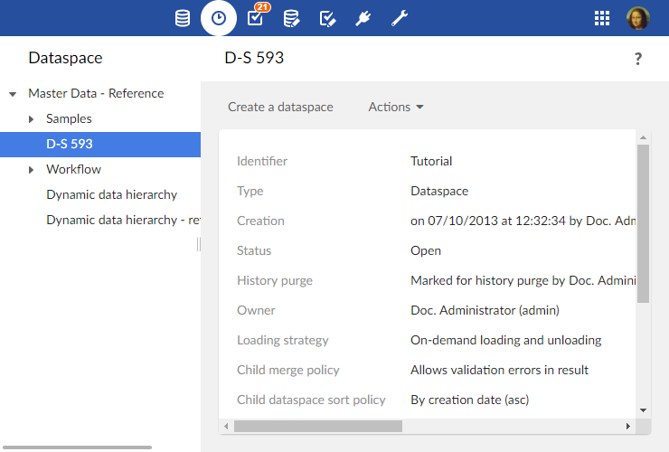

Introduction to dataspaces
Overview
What is a dataspace?
The life cycle of data can be complex. It may be necessary to manage a current version of data while working on several concurrent updates that will be integrated in the future, including keeping a trace of various states along the way. In TIBCO EBX®, this is made possible through the use of dataspaces and snapshots.
A dataspace is a container that isolates different versions of datasets and organizes them. A dataspace can be branched by creating a child dataspace, which is automatically initialized with the state of its parent. Thus, modifications can be made in isolation in the child dataspace without impacting its parent or any other dataspaces. Once modifications in a child dataspace are complete, that dataspace can be compared with and merged back into the parent dataspace.
Snapshots, which are static, read-only captures of the state of a dataspace at a given point in time, can be taken for reference purposes. Snapshots can be used to revert the content of a dataspace later, if needed.

Basic concepts related to dataspaces
A basic understanding of the following terms is beneficial when working with dataspaces:
Using the Dataspaces area user interface
Dataspaces can be created, accessed and modified in the Dataspaces area.
Note
This area is available only to authorized users in the 'Advanced perspective'.
The navigation pane displays all existing dataspaces, while the workspace displays information about the selected dataspace and lists its snapshots.

See also
Related concepts
 User guide table of contents
User guide table of contents